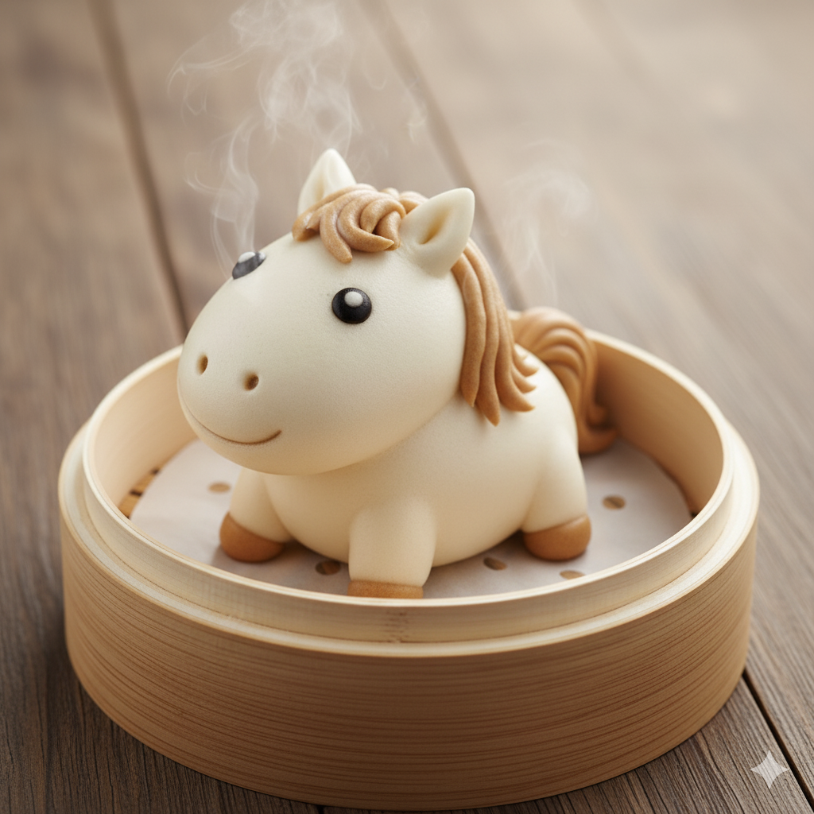

🐭🐂🐅🐰 十二生肖馒头制作教程 🐲🐍🐴🐑
福建版 - 传统手工技艺，简单易学
📋 基础材料准备
🌾 主要材料
- 面粉 500克
- 温水 250毫升
- 酵母粉 5克
- 糖 15克
- 盐 2克
- 植物油 15毫升
🐾 十二生肖制作详解
搓
贴
- 白色面团搓成水滴形做身体
- 尖端做头部，圆端做臀部
- 搓两个小圆球贴作耳朵
- 搓细条做尾巴，弯曲贴在身后
- 用芝麻做眼睛
揉
贴
剪
- 白色面团揉成椭圆形做身体
- 搓小球做头部，贴在身体前端
- 搓两个小锥形做牛角
- 剪刀在脸部轻剪做鼻孔
- 搓细条做尾巴
揉
搓
剪
- 黄色面团揉成椭圆形做身体
- 搓圆球做头部
- 黑色小条贴作斑纹
- 剪两个三角形立起做耳朵
- 搓粗短条做尾巴
搓
贴
剪
- 白色面团搓成椭圆形做身体
- 头部略尖，做兔子脸形
- 搓两个长椭圆形做长耳朵
- 贴一个小圆球做尾巴
- 粉色小点做鼻子
搓
弯曲
贴
- 黄色面团搓成长条做身体
- 一端粗大做头部
- 身体弯曲成S形
- 贴小三角形做鳞片装饰
- 搓四个小球做爪子
搓
弯曲
- 绿色面团搓成长条
- 一端略粗做头部
- 身体盘成圆形或S形
- 用牙签在头部点两个小孔做鼻孔
- 芝麻做眼睛
揉
搓
剪

- 白色面团揉成椭圆形做身体
- 搓长椭圆形做头部和脖子
- 剪刀剪出鬃毛效果
- 搓四个小条做腿
- 搓细条做尾巴
搓
贴
剪
- 白色面团搓成椭圆形做身体
- 剪刀在表面轻剪做毛发质感
- 搓小球做头部
- 搓两个小螺旋形做羊角
- 四个小球做腿
揉
搓
贴
- 黄色面团揉成椭圆形做身体
- 搓圆球做头部
- 大耳朵贴在头部两侧
- 搓长条做手臂和腿
- 搓细长条做尾巴
搓
贴
剪
- 白色面团搓成椭圆形做身体
- 小圆球做头部
- 红色小锥形做鸡冠
- 黄色小锥形做嘴巴
- 剪刀轻剪身体做羽毛纹理
揉
搓
贴
- 黄色面团揉成椭圆形做身体
- 椭圆形做头部，一端略尖做嘴
- 两个下垂的椭圆做耳朵
- 搓四个小条做腿
- 搓条做尾巴，向上弯曲
揉
搓
贴
- 粉色面团揉成圆胖椭圆形
- 小圆球做头部
- 两个小三角形做耳朵
- 搓小圆柱做鼻子
- 搓细条做卷尾巴
🔥 蒸制工艺流程
1
二次发酵
馒头做好后放蒸笼中，盖湿布醒发20-30分钟
4
关火焖5分钟
关火后不要立即开盖，焖5分钟再开
💡 福建特色制作建议
🌊 湿度控制
福建湿度大，发酵时间可适当缩短，注意观察面团状态
🏠 本地材料
可用地瓜粉增加Q弹口感，体现福建风味特色
📦 保存方法
做好可冷冻保存，吃前蒸热即可，方便实用
🎭 装饰技巧
🔧 工具技巧
- 用牙签在表面划纹理
- 芝麻、红枣片做装饰
- 蒸好后可用食用色素笔补充细节
- 摆盘时可配青菜叶增加美感
👨🍳 制作心得
- 制作时要有耐心，慢慢塑形
- 每个生肖都有自己的特色
- 多练习几次就能熟练掌握
- 可以和家人一起制作，增加乐趣